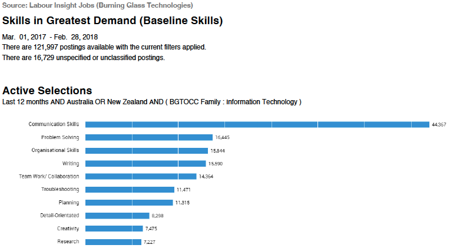
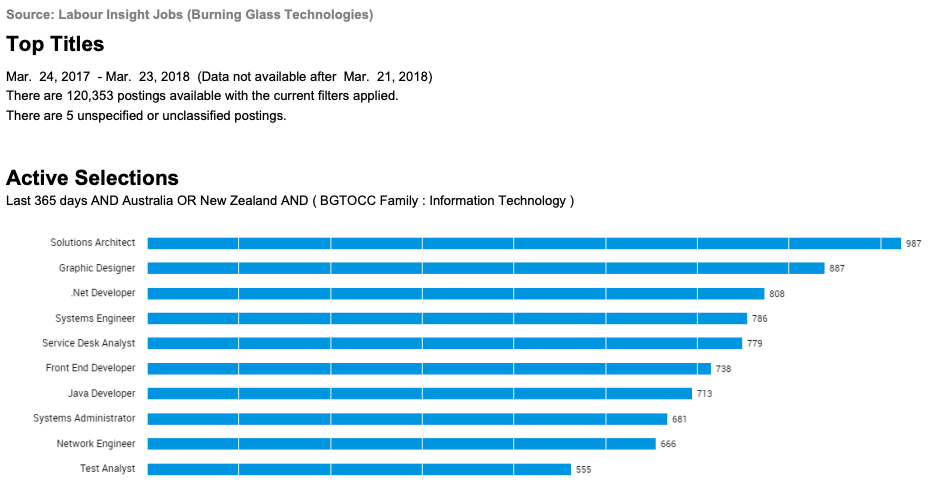
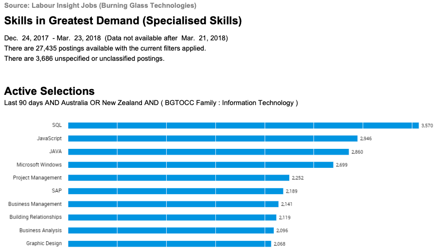
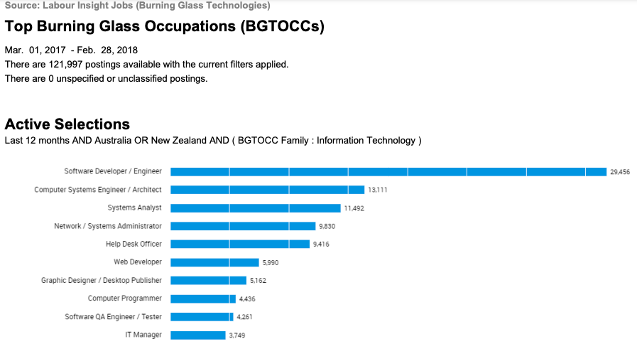

Industry Data
If Kalied AI is to progress, then it is crucial that the team analyse the data of technology trends provided by Burning Glass. The data collected in 2018 measures job demand and the required generic skills and IT specific skills employers advertising. To begin, the teams have nominated their ideal jobs that they wish to pursue at the end of graduation, this is to help them navigate their course structure throughout RMIT.t
The organisation chart below identifies each members nominated ideal job and the area they wish to specialise. Mark wishes to lead a team of developers but may have to increase his experience in his chosen minor before reaching an occupation that high level. Jack, Dom and Yousef are determined to become software engineers, while Gabe is eager to challenge his computer science skills as a technician and Emre is keen to enter the workforce as a systems analyst.
The data below lists the most in-demand jobs in the technology industry for both Australia and New Zealand in 2018.
Burning Glass Skills
Generic
Burning Glass
Job Titles
Burning Glass Skills
IT
Burning Glass
Occupation
The IT Manager
As the ingenuity and reliance of technology continues to expand the workforce will be in search of more IT Managers (BLS, 2018). Marks desired occupation IT Manager is ranked 10th from the burning glass occupation data, with his steppingstone job, Solutions Architect ranked 1st. Mark wants to solve business problems with technology solutions and manage projects across IT. Managers usually need 5 years + of experience in any role to gain the knowledge, respect and attention of their peers (Indeed Career Guide, n.d.). For Mark to excel as a manager he would need experience leading teams as either a Solution Architect, Technician Lead or possess transferable business management skills.
IT Managers generic skills typically develop over several years of industry experience, Mark must begin to think big-picture to develop his strategic planning and evolve his communication and composure to address high level. These generic skills will be a result of Mark exploring his IT Manager pathway by learning Business Intelligence Reporting, Project Management and in-demand Programming Languages.
The Full-stack Engineers
Jack and Dom’s end-goal is to apply for a Full-Stack Software Engineering Role. The successful candidate is a subject-matter expert on both front-end and back-end programming and will need 2-4 years’ experience (Coding boot camp, n.d.). Generally, the job is usually split into two roles, client side and server side, suggesting that there is more demand for software engineers (1st), and computer programmers (8th) than full-stack (17th). Depending on the knowledge of the team and the size of the project full-stack responsibilities can be unmanageable if the scale is too large (Bhagat, 2021). For Dom and Jack to reach their goal during their university degree both could transition into either front-end or web development to build their technology portfolio accelerating their journey before tackling Full-Stack.
Full-Stack engineers are knowledgeable in both client side and server-side programming, their attention to detail and communication must be well developed to be successful in their role. Managing their expertise across many platforms would require high-level organisation skills, this could involve scheduling, version control, documenting, and writing clean code (Bhagat, 2021). The most in-demand IT skills for Dom and Jack to learn from the Burning Glass data are SQL, JavaScript, and Java. Many other programming languages are considered favourable such as .NET, HTML, CSS, Python; these languages have very clean syntax and are considered transferable to other languages.
The ML Engineer
The Burning Glass data from 2018 does not include any job advertisements for Machine Learning Engineers, this could be due to its small attention at the time, but since then society has slowly begun to adopt artificial intelligence concepts (Lazzaro, 2021). Now it’s 2022, machine learning is beginning to boom, and Yousef is determined to minor in this field at university with high hopes to enter the industry before the end of graduation. To put his foot in the door, Yousef will need to become well equipped with mathematical models, including algebra, calculus and graph theory (Gillis, n.d).
Machine Learning Engineers need to be well versed on data-modelling and evaluation to determine technology requirements, as well as natural processing language theories (NLT) to begin building artificial intelligence systems (IBM Cloud Education, 2020). If NLT connects the interactions between human language and computers, then Yousef will need to utilise his problem-solving skills with his applied mathematical background. /p>
The Technician
The closest occupation to represent Gabe’s job title as a technician is a help desk officer. Ranked 5th, Help Desk Officers are a necessity in medium to large scale organisations due to the increase in technology hardware and software; we are becoming increasingly reliant on technology and not everybody can dedicate their lives to understanding how it works, it will be Gabe’s responsibility to ensure the company’s software and hardware is efficient and reliable (Software Reviews, Opinions, and Tips – DNSstuff, 2021).
Technicians must learn more than just in-demand computer programming languages, it is their duty to supply the hardware for onboarding users and to troubleshoot any technical problem that may face throughout their employment (Chambers, n.d.). This would require strong problem-solving skills and communication skills to decipher problems and to translate technical jargon to staff. Chamber continues to suggest that high organisation skills are necessary to manage the data of resolved and unresolved tickets because they create opportunities to improve the business.
The Systems Analyst
Long-term companies must build a responsive relationship between legacy systems and the new technology implemented throughout the business (Stackscale, 2020). It is impossible for old and new systems to exist problem free, therefore it is up to the Systems Analyst to diagnose advanced technical problems in production and to resolve user issues. Another key duty is to advise management about system innovations to improve operational efficiencies (roberthalf, 2017). The compounding role of enhancing systems to benefit user experience is why the occupation is in high-demand, ranked job 3rd from the Burning Glass data.
To keep up with the influx of new and changing systems companies engage System Analysts, who must possess quick learning, teamwork and problem-solving skills (Prospects, 2018). Data analysis and project management are two core components for senior level System Analysts, but entry level must be adept in similar platforms to SAP (Betterteam, n.d.). SAP is a cross-platform software system that communicates to all departments. SAP Systems Analysts are constantly in revolving communication with operations, help desk and development teams to help solve problems cases that are easily understood across all business units.
Group Skills
The Burning Glass Data was compared to the ideal jobs of each team member to pave a career pathway throughout the duration of their study and to identify the generic and IT skills considered successful in their role. A shared vision was then established by the team by collating the collective skillset and distributing them into packed bubble charts for heightened visibility.
IT Specific
The three most common IT skills desired by employers for an IT Manager, Software Developer, Technician and Systems Analyst are a deep knowledge of in-demand programming languages, familiarity of project management frameworks and prioritising the value of data analysis. The necessity of these skills are described in further detail below.
Programming Languages
Out of the 25 IT specific skills provided by the Burning Glass Data, around 15 were related to programming languages with the demand in 2018 in favour of SQL, JavaScript and Java. If these three languages are ranked above any other programming language then technology industry must be recognising data management, digital interaction, and rapid application development as the core components of digital success (Berkeley Boot Camps, 2020).
SQL is a database communication platform required to manage and structure data in a relational database management and the advantage of the structure is that users can access data with a simple command and view the relationship between business and stakeholder information system (Berkeley Boot Camps, 2020.). The volume of data is only increasing as many industries are migrating to the web with new generations giving birth to their ideas solely on digital platforms, this claim indicates that 64% of small business owners run their own website which was a rapid increase from 2018 when 46% didn’t have a web presence (Liedke, 2019). It is essential to follow the money when predicting growth, Liedke (2019) continues to extrapolate that by 2040 95% of the world’s purchases will be through eCommerce.
Paired alongside HTML and CSS, JavaScript is the interaction element of web design. With 4.6 billion users browsing the internet it’s the developer’s obligation to utilise JavaScript as best they can to hold the audience’s attention (Johnson, 2021). Significant tools found online such as search engines, eCommerce, content management systems, social media and mobile device applications are all competing to maximise their user experience (Big Commerce 2021).
There are over 6.3 billion smartphone users accessing applications in the palm of their hand making Java an integral member of the programming family (Build Fire, 2021). Big Tech prefers this reliable language because Java has easy syntax, security and can handle a high volume of data (Kashyap, 2022). Java’s platform has reached such success due to it’s ability to run on any supported device and its capability with legacy systems.
Project Management
tBroadly speaking project management is not IT specific but it has become a critical aspect of technology. Project management in the tech industry is goal-specific and must be managed and delivered on-time and within budget (Smartsheet, n.d.). There are many structures to achieve project success but agile leads the project planning competition with scrum as the main framework choice at 56% (Adeva, n.d).
The focus of Agile is to respond to change by holding face-to-face collaboration to continually deliver and improve working software (Dinnie 2018). Embracing change during the short project-cycle caters for alterations, providing opportunities to refine and reprioritise project items. Scrum framework is great for tracking progress by breaking the business requirements into sprints, which are usually weekly or fortnightly team goals. Focusing on smaller items over big picture ensures that the developed software is working and deliverable. /p>
Scrum adds more components to Agile but with the emphasis of the following roles, Product Owner, Development Team and Scrum Master (Dinnie 2018). The Product Owner represents the voice of the end-users by constantly suggesting areas for improvement, usually backed by data analysis. These ideas are presented to the development team who pitch realistic timeframes for completing code and adding design. The Scrum Master is a supportive leader who is a subject-matter expert helping the team in any area lacking expertise. Scrum is organised by events that bring the team together for planning, reviewing and reflecting; this keeps the team honest and transparent during project life.
Data Analysis
Clive Humby’s phrase “data is the new oil” is a well-known expression in the technology space (The Economist 2017). Organisational labour is now moving toward managing and analysing technology, business and customer data, with deep analysis organising and structuring correlations for financial gain. Data analysis is a core component of project management, it is used for Big Data manipulation and is the mechanical beating heart of artificial intelligence (Grant, 2020).
Today’s technology has data under the microscope and it’s constantly streaming into every feature of business, but it’s how the business captures and interprets the analysis to discover any benefit. Data analysis has many advantages; reducing cost, improving decisions and developing product, and combined these aspects arrange and influence consumer behaviour by uncovering concealed patterns and correlations not visible to process control (sas, n.d.). Unfortunately, traditional data-processing software is beginning to reach its limit due to the compounding surge of dataflow, therefore it’s up to modern methods to interpret the large quantities.
The concept of Big Data is to deal with incoming data that traditional data sets cannot evaluate or hold, this is usually due to the extreme Volume, Variety and Velocity, but with modern methods of analysis these three V’s can address business and technology problems that usually go unnoticed (Oracle 2021). Volume examines the data that is considered valuable when assessing unstructured and low-density datasets. Social media is a prime example of finding value while sifting through terabytes of insignificant information. Velocity is the handling of the rapid amount of incoming data and how to process that in real-time. Variety recognises the diverse types of data that is accessible in unstructured streams and how to translate that into data and metadata that is tangible.
textBostrom’s (2014) work in Superintelligence challenges the doomsayer question that the world will be overrun by machines, and instead proposes a more realistic view, that AI systems will eventually collect enough data to hold information at ransom, and the power will reside on the discretion of the intelligent minds who control those systems. Chowdhary (2020) expands by explaining that unstructured text is growing by the second and it is the biggest human generated data source involving web data, emails, instant messages, digital records, social media. To unveil the trends of words in an efficient manner ‘natural language processing’ can evaluate tremendous amounts of text faster than manual intervention, aiding investigations of process control and consumer behaviour. /p>
Generic Skills
tThe three most common IT skills desired by employers for an IT Manager, Software Developer, Technician and Systems Analyst are strong lines of communication, high problem-solving and structured organisation.
Communication
The Burning Glass data has communication as the leading in-demand skill from employers by more than double of the next in-demand skill. The unanimous lead could be due to many over sought factors in the IT industry considering most of the billed time is spent on computers (Thrive Global, n.d.). There are a few communication measurements which make it a multifaceted skill: interpersonal, listening, writing, and collaboration (Thrive Global, n.d.). Interpersonal skills are about building relationships and coming across as a likeable. Listening establishes connection by allowing the person who is speaking to feel valued. Writing demonstrates knowledge and knowledge sharing. Collaboration is the networking of idea sharing and execution among teams with the emphasis on engagement.
The technology industry has many areas of expertise for one person to do it alone, to deliver working software individuals must work in teams and call on each of these communication micro skills to achieve success.
Problem-Solving
Problem-solving is the art of identifying business problems and applying solutions with minimal negative impact (Doyle, 2020.). Problem-solving can be in the form of a long-term business problem that must be solved to improve brand or can be damage control in time-critical scenarios requiring risk mitigation, such as an unplanned system outage.
Problem-solving isn’t necessarily something and individual is born with but is the ability to implement solutions that benefit all parties and there are numerous ways this can be achieved (Indeed Career Guide, n.d.). Analysing contributing factors through data gathering and data analysis is a great place to start, holding group interventions by brainstorming with subject-matter experts, mediating solutions that interests both customer and business, and executing a plan with target metrics to measure success. Problem-solving is a learned skill and should be one of the defining features on every resume.
Organization
Project management and communication are the two of the most important skills in the IT industry, but it is almost impossible to express the two without high-level organisation skills (Estrada, n.d). Today organisation is presented digitally, with platforms like Confluence and Jira, teams can provide heightened visibility of documentation across business units (contegix, n.d.). The vision is to create an online workspace so that if any employee were to leave another can pick up exactly where they left off. Many projects are planned using Confluence and the available tools help teams track progress by prioritising items and adhering to time-management requirements.
High organisation skills establish a foundation of order and will boost productivity by determining project scope and another advantage is that with high organisation skills teams understand project vision and can communicate this up and down stream (Indeed Editorial Team, 2021).
Final Thoughts
For the team to reach maximum potential each of the skills above must be a primary focus while studying at RMIT, with emphasis on communication and programming languages. It’s clear that the shared role we play is to be a conduit between man and machine, translating the technical jargon to end users whether it be on or off-screen. Among the Burning Glass data were favoured skills that will take even longer to develop. The team should consider exploring leadership qualities in addition to the six skills, but what does leadership look like to a team of entry-level students? To develop the perspective of leadership based on the information above the team can learn to communicate effectively, take on constructive criticism and practise mapping tools to understand project vision (Krakoff, n.d.).
After reviewing each team members ideal job the ambition to reach their end-goal hasn’t changed but the challenge instead should be for everyone to enter the technology space before the end of graduation. Mark could explore his position as a lead, either as a technician lead or solutions architect at a larger company before becoming an IT manager. Jack and Dom might enter front-end web design to begin thinking customer while Yousef could start building automated programming in python. With Gabe’s knowledge he could become a helpdesk specialist immediately and consider a stretch goal to become lead, and Emre should consider entering operations to gain further user experience.
- Bls.gov. (2018). Computer and Information Systems Managers : Occupational Outlook Handbook: : U.S. Bureau of Labor Statistics. [online] Available at: https://www.bls.gov/ooh/management/computer-and-information-systems-managers.htm.
- Indeed Career Guide. (n.d.). How To Become an IT Manager. [online] Available at: https://www.indeed.com/career-advice/career-development/how-to-become-an-it-manager.
- Coding Bootcamp Le Wagon | Most Acclaimed Coding Bootcamp Worldwide. (n.d.). Full Stack Developer Job Profile - What Does A Full Stack Developer Do? | Le Wagon. [online] Available at: https://www.lewagon.com/tech-jobs/web-development/full-stack-developer#:~:text=Some%20employers%20will%20require%20that [Accessed 22 Apr. 2022].
- Bhagat, V. (2021). Full Stack Developers: The Pros and Cons of Hiring One. [online] PixelCrayons. Available at: https://www.pixelcrayons.com/blog/full-stack-developers-the-pros-and-cons-of-hiring-one/ [Accessed 22 Apr. 2022].
- Lazzaro, S. (2021). VentureBeat. Machine learning’s rise, applications, and challenges. [online] Available at: https://venturebeat.com/2021/06/21/machine-learnings-rise-applications-and-challenges/#:~:text=In%20the%20first%20quarter%20of [Accessed 22 Apr. 2022].
- Gillis, A.S. (n.d.). SearchEnterpriseAI. What Is A Machine Learning Engineer? What Do They Do? [online] Available at: https://www.techtarget.com/searchenterpriseai/definition/machine-learning-engineer-ML-engineer.
- IBM Cloud Education (2020). What is Natural Language Processing? [online] www.ibm.com. Available at: https://www.ibm.com/cloud/learn/natural-language-processing.
- Software Reviews, Opinions, and Tips - DNSstuff. (2021). Why Help Desk Software Is Essential for Your Company’s Growth - DNSstuff. [online] Available at: https://www.dnsstuff.com/help-desk-software-company-growth [Accessed 22 Apr. 2022].
- Chambers, S (n.d.) Help Scout. Why Investing in Help Desk Software Increases Your ROI - Help Scout. [online] www.helpscout.com. Available at: https://www.helpscout.com/helpu/investing-in-software-for-help-desk-increases-roi/ [Accessed 22 Apr. 2022]
- Stackscale (2020). What is a legacy system? Challenges, risks and migration. [online] Stackscale. Available at: https://www.stackscale.com/blog/legacy-systems/.
- www.roberthalf.com.au. (2017). System Analyst job description and duties | Robert Half. [online] Available at: https://www.roberthalf.com.au/employers/it-technology/systems-analyst-jobs.
- Prospects (2018). Systems analyst job profile | Prospects.ac.uk. [online] Prospects.ac.uk. Available at: https://www.prospects.ac.uk/job-profiles/systems-analyst.
- Betterteam. (n.d.). SAP Business Analyst Job Description. [online] Available at: https://www.betterteam.com/sap-business-analyst-job-description [Accessed 22 Apr. 2022].
- Berkeley Boot Camps. (2020). 11 Most In-Demand Programming Languages in 2022. [online] Available at: https://bootcamp.berkeley.edu/blog/most-in-demand-programming-languages/#:~:text=According%20to%20Stack%20Overflow.
- Liedke, L. (2019). The Ultimate List of Online Business Statistics (2019). [online] WPForms. Available at: https://wpforms.com/the-ultimate-list-of-online-business-statistics/.
- ohnson, J. (2021). Global digital population 2020. [online] Statista. Available at: https://www.statista.com/statistics/617136/digital-population-worldwide/#:~:text=How%20many%20people%20use%20the.
- BigCommerce (2022). What is JavaScript, and why is it important? [online] BigCommerce. Available at: https://www.bigcommerce.com.au/ecommerce-answers/what-javascript-and-why-it-important/#:~:text=js%20makes%20responsive%20design%20easier [Accessed 19 Apr. 2022].
- BuildFire. (2021). Mobile App Download Statistics & Usage Statistics (2022). [online] Available at: https://buildfire.com/app-statistics/#:~:text=With%20over%206.3%20billion%20smartphone.
- Kashyap, N. (2022). Top 5 Programming Languages That Will Dominate Tech-World in 2022. [online] Geek Culture. Available at: https://medium.com/geekculture/top-5-programming-languages-that-will-dominate-tech-world-in-2022-68a9e18d36ad [Accessed 20 Apr. 2022].
- Smartsheet. (n.d.). IT Project Management. [online] Available at: https://www.smartsheet.com/content-center/best-practices/project-management/project-management-guide/project-management-IT.
- Adeva. (n.d.). Latest Reports on the Most Popular Agile Methodologies. [online] Available at: https://adevait.com/blog/remote-work/adopting-agile-the-latest-reports-about-the-popular-mindset.
- Dinnie, M. (2018). 7 Popular Project Management Methodologies And What They’re Best Suited For. [online] Zenkit. Available at: https://zenkit.com/en/blog/7-popular-project-management-methodologies-and-what-theyre-best-suited-for/.
- The Economist (2017). The world’s most valuable resource is no longer oil, but data. [online] The Economist. Available at: https://www.economist.com/leaders/2017/05/06/the-worlds-most-valuable-resource-is-no-longer-oil-but-data.
- Grant, A. (2020). MUO. What Is Data Analysis and Why Is It Important? [online] Available at: https://www.makeuseof.com/tag/what-is-data-analysis/#:~:text=Data%20analysis%20is%20used%20to [Accessed 22 Apr. 2022].
- www.sas.com. (n.d.). Big Data Analytics: What it is and why it matters. [online] Available at: https://www.sas.com/en_au/insights/analytics/big-data-analytics.html#:~:text=Big%20data%20analytics%20helps%20organizations [Accessed 20 Apr. 2022].
- Oracle (2021). What is big data? | oracle australia. [online] Oracle.com. Available at: https://www.oracle.com/au/big-data/what-is-big-data/.
- Bostrom, N. (2014). Superintelligence: Paths, dangers, strategies. Oxford University Press.
- Chowdhary, K.R. (2020). Natural Language Processing. In: Fundamentals of Artificial Intelligence. Springer, New Delhi. https://doi.org/10.1007/978-81-322-3972-7_19
- thriveglobal.com. (n.d.). Why Communication Skills are Important in the IT Industry. [online] Available at: https://thriveglobal.com/stories/why-communication-skills-are-important-in-the-it-industry/#:~:text=Strong%20communication%20skills%20are%20a.
- Doyle, A. (2020). The Balance Careers. What Are Problem-Solving Skills? [online] Available at: https://www.thebalancecareers.com/problem-solving-skills-with-examples-2063764#:~:text=Key%20Takeaways-.
- Indeed Career Guide. (n.d.). Problem-Solving Skills: Definitions and Examples. [online] Available at: https://au.indeed.com/career-advice/resumes-cover-letters/problem-solving-skills.
- www.contegix.com. (n.d.). Jira and Confluence: Integration, benefits, and ways to use them together | Contegix. [online] Available at: https://www.contegix.com/jira-confluence [Accessed 22 Apr. 2022].
- Indeed Editorial Team (2021). What Are Organizational Skills? (With Examples). [online] Indeed Career Guide. Available at: https://www.indeed.com/career-advice/career-development/organization-skills.
- Estrada, E. (n.d.). The Muse. Your Guide to Organizational Skills at Work. [online] Available at: https://www.themuse.com/advice/improve-organizational-skills-workplace-examples.
- Krakoff, S. (n.d.). The Top 10 Qualities of a Great Leader. [online] Available at: https://online.champlain.edu/blog/top-qualities-of-a-great-leader#:~:text=Leadership%20involves%20the%20knowledge%20that [Accessed 22 Apr. 2022].